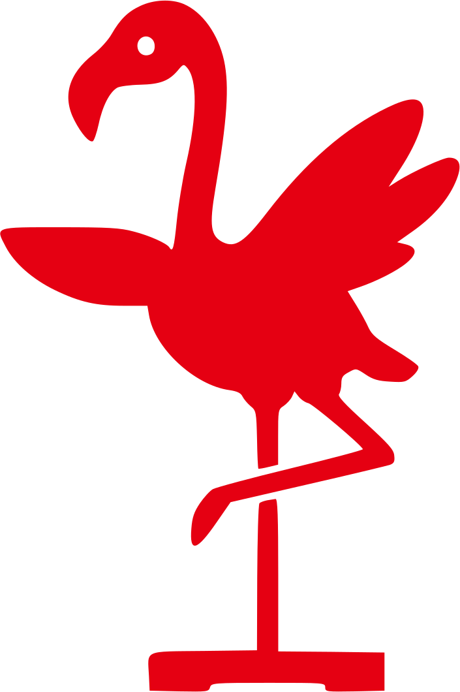

Windows · macOS · Linux · Android
Scan and press Sync
The toolkit finds and pairs the board for you.
No Bluetooth settings neededOpen-source software for the Wii Balance Board
On Linux and macOS, the desktop app can be compiled from the source code.

Simulated with the toolkit’s formula. Move your pointer over the board to shift the weight.
Multi-point calibration with known weights, and monitoring for sensor drift.
Sessions that connect and record more than two boards at once.
Guides to setting up, the metrics and the streams, in one place.
Windows · macOS · Linux · Android
The toolkit finds and pairs the board for you.
No Bluetooth settings neededDesktop app
Sway, stability and frequency, plotted live as the person stands. Every session saves as CSV.
r = 0.99 against lab force platesUnity · Python · LSL
Forces and centre of pressure stream live to Unity, Python or any LSL tool.
Under 0.5 ms processing latencyAfter the session
Reprocess any recording with different settings, and stream it as if it were live.
Android app
Run live sessions from a phone, with the same processing as the desktop app.
Desktop app
Single leg stance, Timed Up and Go and four more, each with an instruction screen for the participant.
Video
From pairing to a finished recording, on a real board.
@inproceedings{valente2026balancetoolkit,
title = {The Balance Toolkit: Democratizing Balance-Based Interaction
Through Open-Source Software for Repurposed Wii Balance Boards},
author = {Valente, Andreia and Kothari, Nidhi and Ahmed-Mahmoud, Hana
and Esteves, Augusto and Billinghurst, Mark},
booktitle = {Annual Symposium on Computer-Human Interaction in Play (CHI PLAY '26)},
year = {2026},
address = {York, UK},
publisher = {ACM}
}